Namma Chennai
Explore the culture, food and beauty of Chennai
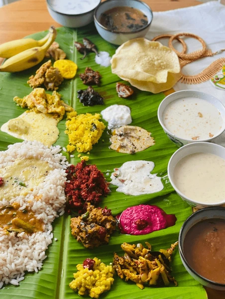
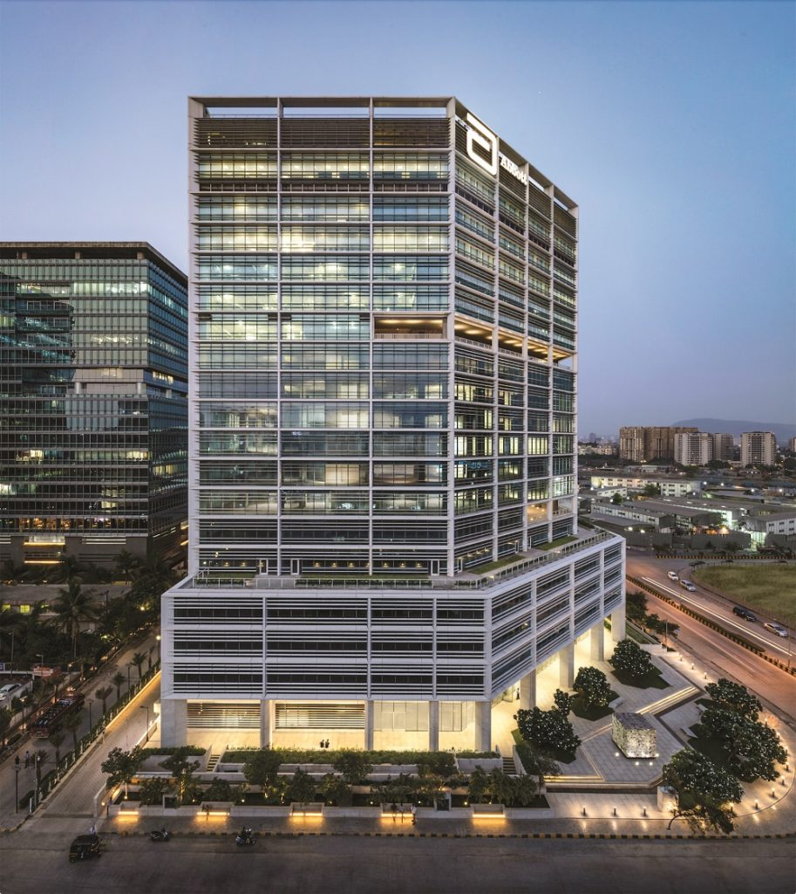


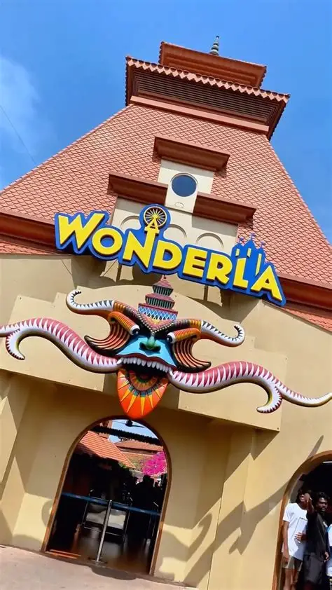
Explore the culture, food and beauty of Chennai



Taste of Chennai

Biriyani is a spicy and flavorful rice dish made with aromatic spices and meat or vegetables. It is one of India’s most loved and popular dishes.
Coffee is a popular beverage made from roasted coffee beans, known for its rich aroma and refreshing taste, and it is widely enjoyed around the world.
Pani-Poori is a popular Indian street food made of crispy hollow puris filled with spicy water, tangy chutney, and mashed potatoes or chickpeas.
Hover for Details
Discover Chennai
.jpg)

Elliot’sBeach
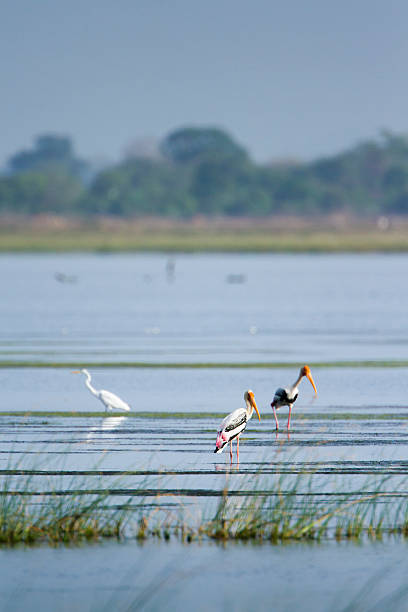
Pallikaranai
Wondarla
MarinaBeach
New Life in Chennai
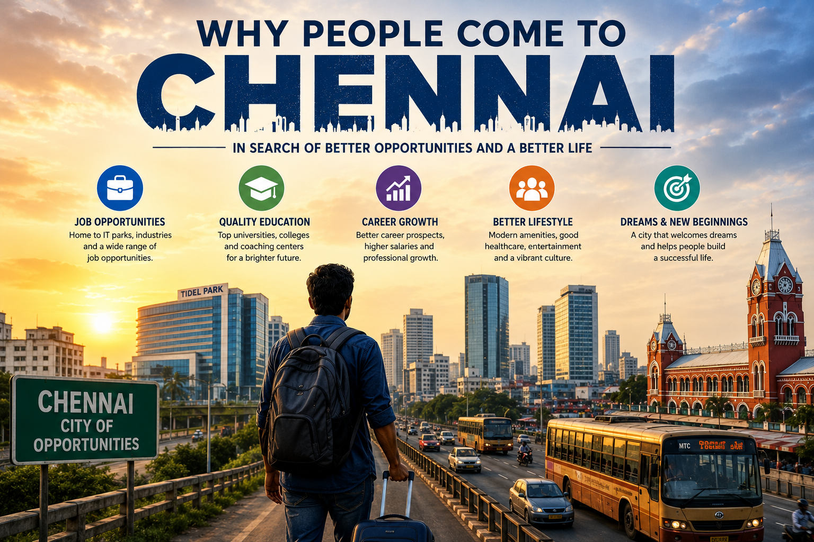
OPPORTUNITIES
Chennai provides many job opportunities for people from different places.
QUALITY EDUCATION
The city offers excellent educational institutions and learning facilities.
CAREER GROWTH
People come to Chennai for better career growth and higher salaries.
BETTER LIFESTYLE
Modern facilities and city life improve people's living standards.
DREAMS & NEW BEGINNING
Chennai helps people start a new journey and achieve their dreams.
Chennai After Dark
1
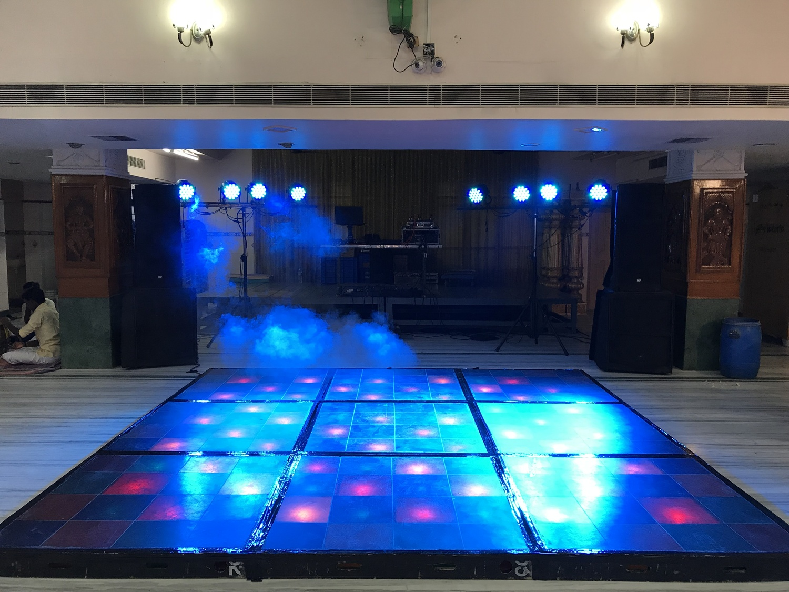
DJ
2
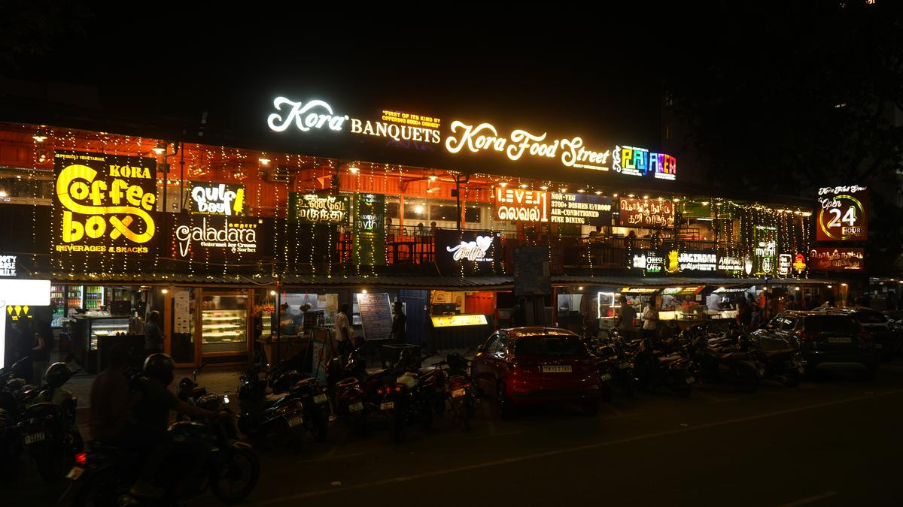
KORA
3
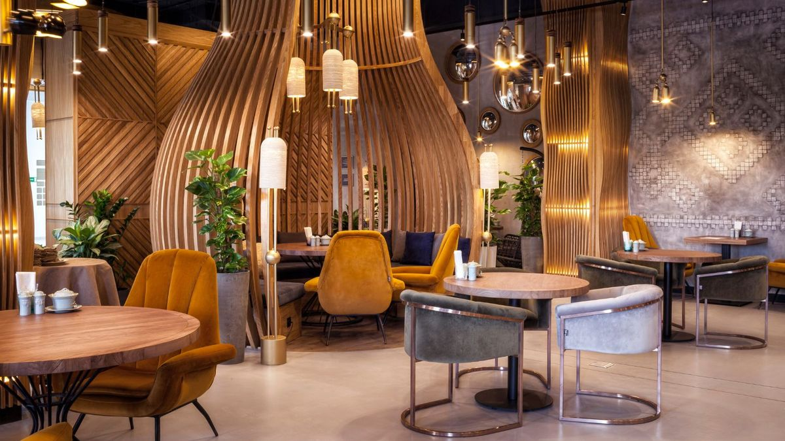
CAFE
Holy Places in Chennai

Kapaleeshwarar Temple
Kapaleeshwarar Temple is one of the oldest and most sacred temples in Mylapore, Chennai, dedicated to Lord Shiva in the form of Kapaleeshwarar and Goddess Karpagambal. Built in classic Dravidian architectural style, the temple is well known for its tall, colorful gopuram decorated with hundreds of detailed statues showing scenes from Hindu mythology. The temple has a peaceful atmosphere filled with devotional chants, traditional rituals, and cultural activities that reflect Tamil spiritual traditions. Devotees believe that worshipping here brings prosperity, happiness, and spiritual blessings. The temple tank, known as Kapali Theertham, adds beauty to the surroundings and is used during important religious ceremonies.

Santhome Cathedral Basilica
Santhome Cathedral Basilica is a historic Roman Catholic church and an important religious landmark in Chennai. Located along the Bay of Bengal near Marina Beach, the basilica stands as a symbol of faith, history, and architecture. It is one of the very few churches in the world built over the tomb of an apostle — Saint Thomas, who is believed to have brought Christianity to India in the 1st century AD. The present structure was built by the British in 1896 in neo-Gothic style, featuring a tall white tower that rises about 155 feet high. Inside the church, visitors can see beautiful stained-glass windows that depict scenes from the life of Jesus Christ and Saint Thomas. The peaceful prayer hall, underground tomb chapel, and museum attract thousands of pilgrims, tourists, and history lovers every year.

Thousand Lights Mosque
Thousand Lights Mosque is one of the most famous mosques in Chennai, located on Anna Salai. It is an important religious center for the Muslim community and is known for its beautiful Islamic architecture. The mosque was originally built in the early 19th century by Nawab Umdat-ul-Umrah of the Arcot Nawab family. The name “Thousand Lights” comes from the tradition of lighting a thousand oil lamps to illuminate the prayer hall during special religious gatherings. The mosque features tall minarets, large domes, and spacious prayer halls that can accommodate thousands of worshippers at a time. It serves as the headquarters of the Shia Muslim community in Chennai and becomes especially vibrant during festivals like Muharram and Ramzan. The peaceful atmosphere, elegant design, and cultural importance make Thousand Lights Mosque a significant religious landmark representing Chennai’s rich diversity and religious harmony.
Fun Side of Chennai
Klasse Entertainment
Queens Land
Mystery Rooms
wondarla
SkyJumper Amusement Park
TIA Gaming World
SMAAASH
Timezone Phoenix Marketcity


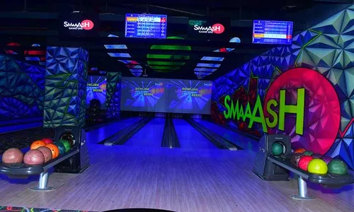

The Transformation of Chennai
Old Chennai, earlier called Madras, started as a small coastal town. The city grew when the British East India Company built Fort St. George for trade and administration. During those days, Chennai had quiet streets, traditional houses, local markets, and a simple lifestyle. People mainly depended on fishing, trading, and small businesses. Old Chennai laid the foundation for the modern city we see today.
New Chennai is a modern and fast-growing city. After changing its name from Madras to Chennai, the city developed with IT companies, big buildings, malls, and better roads. The Chennai Metro Rail Limited made transportation easy and comfortable for people. Today, Chennai is an important city for jobs, education, technology, and modern lifestyle while still keeping its culture and traditions.
From Madras To Chennai
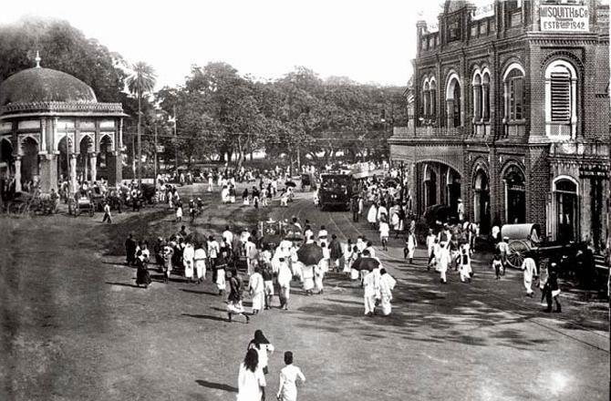
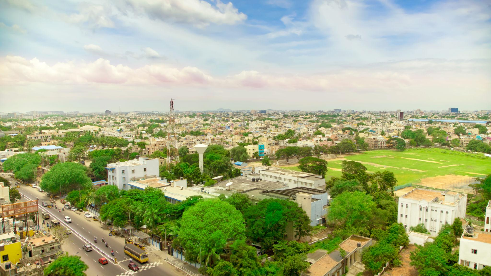
Final Thoughts on Chennai
New Chennai is a city that transforms the lives of thousands of people every year. Many come here with dreams and find education, jobs, and new opportunities. With growing industries, modern facilities, and a welcoming environment, Chennai helps people build a better future and achieve success.